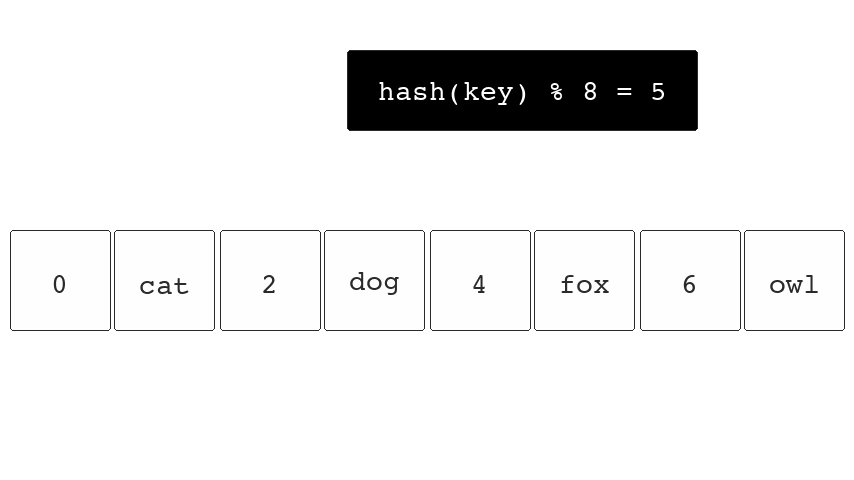
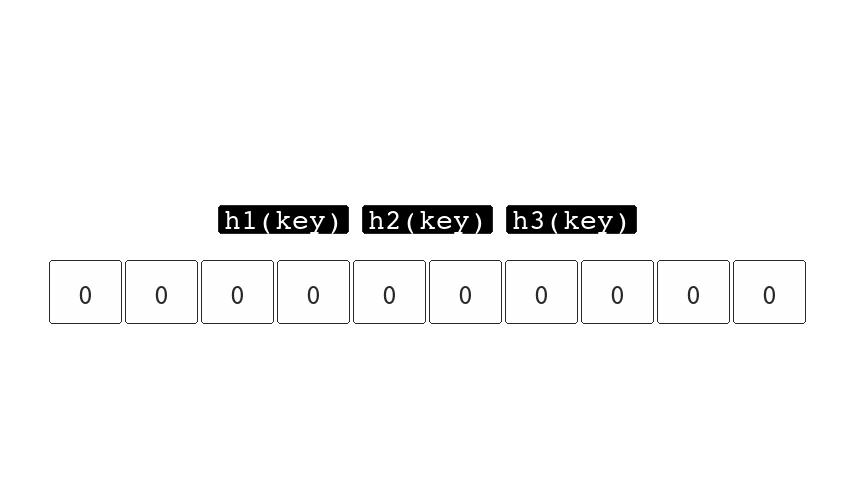
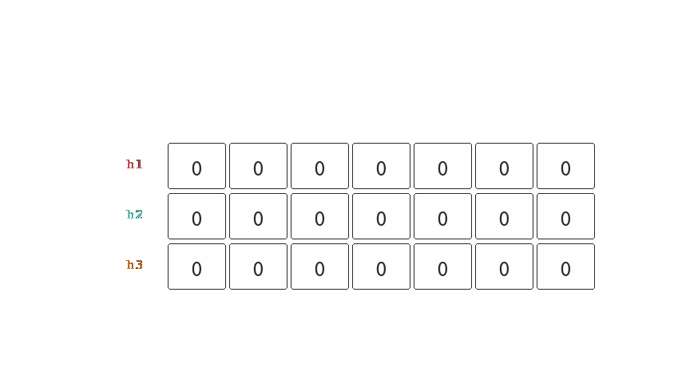

Mon 17 August 2026
Release sooner, Learn faster
Startups fail for the same reason you might. The typical failure case for startups include no market need and failing to pivot quick enough. These are also risks faced by larger companies but they're harder to notice. A typical solution from leadership is to remove processes and promote behaving "like a startup".
One does not throw process out the window in order to succeed. If this were the case; injecting chaos into a team would be the dominant strategy.
The key to running a successful product team is to establish a culture that seeks to aggressively shorten the time it takes for the team to make mistakes and learn. Shipping the wrong thing in one week is better than shipping the wrong thing in 6 months.
Long Term Risks
Long term plans lack the existence of genuine feedback, instead feedback is received on the idea in our head and how the idea is perceived in someone else's head. This misalignment is one of the risks we bake into the development cycle among others that aren't obvious when we have a long development horizon.
A plan is the route we take from the current state of the world A and the world we wish to exist B. When we commit to the plan we are hoping that this new world will be the place everyone wants to be. If 11/12 startups fail this indicates we are generally bad at envisioning futures.
Quarterly releases has the risk of assuming what is true today will still be still in three months and that everything will go according to plan during this time and not be derailed by something that takes priority.
If things do go according to plan and we get to release, the best case scenario is that the vision is only three months old. However in reality one learns, ideas mature and the state of the real world can change in a short time.
Long on-going projects are hard to back out of. Admitting defeat is hard especially if a competitor fails finding product market fit for the very next thing you're waiting to release. There's the sunk cost fallacy, political stake, emotions and the missed opportunities from having to sit down and crunch in the last minutes of release. Even having your head in the problem can help you realise that it might not work out and we have to ask ourselves if we've reached the point of no return.
A project that is under an on-going and long product iteration cycle needs to constantly reassure stakeholder that everything is alright and will be alright. Additionally there's the pressure being applied from shiny new ideas that have novelty appeal and are more exciting to talk about than the thing we've been actively working on for the last two months.1
These are all systemic risks that are not built into the product but are built across the delivery process. A company that releases quarterly has a minimum reaction time of 3 months.
What can we do?
We have two goals. Find out what is valuable and minimize the time it takes to deliver that value. Ideas are cheap, customers pay you for what you release they don't pay for what you plan.
Learning comes from the user and you can skip discussions or second opinions. Getting something into the users hands is the opportunity to learn far more than you might from a peer. Spending 2 weeks to fail is far cheaper than spending 3 months and now you can take what you've learnt into the next cycle.
Successful startups are skipping advise from the experts and just seeing what works. Senior leadership can sometimes hold innovation back and a little naivety can go along way. We need maturity to say "I don't know" and bravery to say "Let just give it a go".
Identify the processes that are busy work, work that feels productive but slows down your ability to release. This could be planning meetings with teams that have nothing to do with your project.
Focus on development that gets you signals instead of releasing fluff. You don't need to release the entire picture, if you have the opportunity to release only one thing and that thing helps you determine if your vision is wrong, you shouldn't be building anything else.
Do some now
Delivering something now is better than delivering it all at later.
Don't delay learning, if you release a product to the world after months of working on it, you're going to be doing a lot of "learning" after that release. Only if it's not incredibly hard to separate that parts that are cruft and the parts that are valuable in this release - it is far easier to learn iteratively than it is to learn while you're putting out fires.
There are no rules, you are allowed to release something and have users find it by chance or selective introduction. Releasing a feature is different from announcing a feature. Some users might never come into contact with the feature, and those that find it might ignore it since it doesn't fit their use case. It is fine for things to not be a fit for all customers, but the users that find it's useful have had value delivered to them without you needing to complete the entire project. To these customers you've done this quicker than expected and now you're being paid earlier than expected.
Value can be delivered even if it requires manual work. Managing to automate 40% of the workload while requiring the rest to be fine-tuned from the user will be seen from the determined customer as saving them 40% of the time, they won't see the job as half done. Their concern is getting to market, they have their own competitors and you've just given them a 40% head start. Had you not released early, they would have to do the 40% themselves anyway.
Waiting to serve all use cases delay some of your customers when they could be using that time to make their money. Doing 20% of the work might be 10% more than a competitor, and releasing sooner positions you better and can de-risk churn.
Are your customers even asking for it? You can get through releasing 10% of the plan and suddenly all your existing customers adopt the feature without you needing to sink time into the other 90% of the work that you had assumed would be needed to convince them. Ditch the plan, ask them what's next.
If there's one truth or take away from this post; it's that the importance of something being done diminishes over time so the sooner something is delivered the higher it's overall impact. No matter how small.
-
Often out leaders just need to be unconditional hype people, always gassed about the work we are doing. ↩
Mon 27 July 2026
Accountability
The strongest leaders aren't afraid to recognise failure. Some are even demonised for shutting down parts of a business that aren't working but this is no different to removing a lazy member from the group project. All teams need mechanisms to ensure accountability. Accountability maintains high performance. It's easier to remember the Russian proverb:
доверяй, но проверяй
"Trust, but verify"
Having a slacker in a school group project can become the cause of frustration. Even high performers can be brought down if they see what the shirker can get away with. While we are in school a project might last 1-3 months and you can choose to avoid teaming up again. In business you might be stuck with this person indefinitely.
The sooner problems are addressed the quicker things can turn around. All teams need mechanisms for accountability, these can be daily stand ups or bi-weekly sprint goals. Even teams that you assume are high trust environments have mechanisms for commitment; such as equity tied to targets and vesting periods among co-founders and early employees. Otherwise we risk awarding someone else for the work we put in.
Smaller companies can be better at identifying when things are not working since a single person in a team of 20 accounts for 5% of the business. In larger enterprises people may hide among the numbers if there's no culture of accountability.
Why do we find it hard to call out under performance or feel bad when we have to kill a project?
A conversation on accountability is much harder to have if the project has been going on for some time. The best way to avoid the hard conversation is to set expectations upfront. If you've missed this chance then now is better than later as delay could cause more damage if these crucial conversations are forgone and an opportunity to deal with it is lost.
Shirkers shouldn't get a free ride while a group toils. They can skew stakeholder expectations and start affecting your own performance negatively. It takes a bit of bravery to hold other to account but in a team the burden must be shared.
It is easy for high performers to get fed up if they are not being recognised when they're holding up a team on their own and you could be left holding all the shirkers.
If you really want your readers to get invested in the story, kill off a character, this is a good way to indicate that the stakes are real. Do you think Game of Thrones would have been a hit if everyone survived? How come we aren't resurrecting Boromir or Háma?
Investors
One of the oldest and most studied behavioural patterns among investors is called the disposition effect, built on prospect theory in behavioural economics.
This effect explains that investors are often quick to sell their winners and hold their losers for too long. Studies have found that people are loss averse, they have a stronger negative reaction to the same situation when it is framed as a loss than if it were framed as a gain. These behavioural biases lead us to sub-optimal decision making. Investors will frame holding a losing asset as only a loss upon selling, while holding may lead to the hope that they might one day break even.1
Cut the losers, hold the winners.
Pragmatism
Not all work needs to be delivered, but evidence of progress needs to be made. If someone has sunk a month of their time and has nothing to show for it this is the slow approach to failure, at the end of a month you need to show a document that outlines the challenges and difficulties and the approaches you took to make progress as well as some potential avenues which may lead to successful outcomes, at the very least.
Essentially you need to go from 0 to 1 in delivery or evident as best as you can to show that you're moving off the starting point. The following month you can't be starting from 0 otherwise you may as well just have been on holiday.
This is the R in R&D.
Excuses
Avoid leaders that blame market forces. A leader that is quick to point at external factors for failure will be as quick to claim the success of others.
When we succeeded it was all part of my plan and when we failed we were just unlucky. It never seems to be the case that we were lucky to succeed, despite our fuck-ups. If we want to use market forces as an excuse then we should accept that we may succeed despite how poor our decisions were in hindsight.
If we fail to be accountable we will fail to recognise when we are in control and when we are not. When shit hits the fan you want to be surrounded by people that know the levers that can help us get out of a mess, not around those that shrug and say "well what could we have done?".
Taking accountability and owning the failure actually helps you avoid falling for the same traps and making the same mistakes. Leaders that show vulnerability are more likely to build trust and stronger collaboration.
Find people that own up to their mistakes, take accountability and make an effort to grow, but make sure to verify.
References
-
A note here, if you held stock in Bank of America in 2007, you would have to wait 18 years until you would have seen the asset reach the same price again. ↩
Tue 28 April 2026
Software Design Playbook
A PR should never be rejected for architectural decisions. When code is written the overall system should have already been planned and agreed upon.
There are two common types of software documents, the architectural decision record [ADR] and the software design document [SDD]. Companies can combine both or do with only an SDD. There's no one size fit all and not all software needs much thought.
Planning software is a recurring theme on my blog and this article attempts to provide the structure to how I plan and design.
ADRs
Architectural Decision Records are typically how decisions are expressed given the context and knowledge at the time. Martin Fowler will cover the topic of ADRs better than I.
SDDs
A Software Design Document is the specification detailing the system and the system's intent before it is built in order to encourage feedback and catch plot holes early in the development cycle of software.
Other than allowing us to get feedback before commitment they are a useful practice for the following reasons:
-
Discovering knowledge gaps. The practice of planning the system allows us to make an initial pass at realising an idea. The practice can bring to light areas we hadn't noticed and reveal that our logic doesn't make sense on paper.
-
Reflection. We learn over the course of a project and having a document that captures our assumptions at the start provides us with a meaningful document that we may reflect on and identify why we were initially wrong.
-
Prosperity. Systems are often forgotten, having a document that outlines the project's initial stated aims can provide an answer in the future when we ask "why did we do this?" Or someone new to the company asks "why did you build it like this?".
-
Getting buy in. It is tough to convince others of an idea in your head. As soon as it's on paper and there's clear logic to your conviction there will be more willingness of others to support. Projects that stand up well to criticism are also more likely to be convincing and picked up.
Template
These documents depend on the problem they aim to address and typically include the following sections:
Context
Tell the audience the problem you aim to solve and why it is important to solve it. Generally I define the state of the system at the current point in time and expose the gaps it has.
E.g. users are wanting double the portion of donuts, we only have 1 donut machine, if we buy another donut machine we will be able to serve twice as many donuts and multiply our profit by a factor of 2.
Scope
Make the limitations clear upfront. Tell the reader what the solution is not aiming to solve. The perfect software doesn't exist and if we tried to build it we would run out of time and runway. Setting boundaries allow us to focus on the core problem we aim to solve.
E.g. The donut machine will not address the users asking for apple juice.
Proposal
Start at a high level and break it down into its components in the subsequent sections. When communicating systems we must understand that individuals consume information differently, some are more visual than others. Knowing this we can enrich the document by providing more than a single representation of the point we are trying to make.
| Representation | Good For |
|---|---|
| Diagram | flows and relationships |
| List | overviews and sequences |
| Prose | nuance |
| Table | comparisons |
Even if a decision is minor the trade-offs should be tabulated. The choice can be obvious but the practice of assessing an alternative can reveal better solutions, and avoid falling into a Cargo Cult trap.1
Rejected Options
Avoid designing once, by including the rejected options we make this practice clear. Our first idea will not always be our best idea2. Understanding the weaknesses of our rejected options can also provide answers to the curious reader.
If we need to improve the system in the future; remembering why we rejected the other options may allow us to avoid them when we need to pivot. Unless something has changed, we might have a better understanding of options in the future and they'll become opportunities.
Optional Sections
These sections don't apply to all software designs, you might use all of them on a large document. Smaller changes to a system disregard them.
Cost
Money and time.
Provide cost and time estimates, these can give other departments a head start when considering pricing or capacity. Start with estimates or source price pages, something is better than nothing when it comes to informing the stakeholder of a go/no-go project.
Cost is not only found in raw compute. There's also the ongoing cost of upkeep; ensuring the system is up-to-date. Some systems require a member from support staff or an analyst for input on a regular basis, these are flagged as operational cost.
Risk
Address what can go wrong and cover how likely it is to happen. On large projects, some risks might not have a mitigation but we can address how to measure it and minimise it's impact by catching it as early as possible.
Determining the project's risk comes from experience. They range from technical risks like an overview of technical short cuts and their cons, to softer risks such as the introduction of friction affecting product adoption or the consequence of design affecting popular perception.
Goals
Every system should have a goals otherwise it's literally pointless, without a clear purpose the systems is debt before it gets off the ground. This also helps to alleviate scope creep as clearly defined goals allows us to cut any work that does not achieve the original stated purpose of the system.
Milestones
Through my experience I have found high level milestones can be useful, however if they are inflexible or significantly detailed they hold a project back.
The benefit of high level milestones is that it indicates a larger vision for the project and the potential long term impact it may have. We tend to learn over the course of the project so these should be flexible as we are bound to discover things up until the release of the first milestone that will impact our initial plan.
Getting feedback from the first users of your system can throw your roadmap and milestones in the bin.
Deep Dives
As a company scales the systems become more complex, complexity can also be introduced by regulation and some consideration needs to be made before bringing on 3rd party providers. To deal with this I have a shortlist to assess risks when designing software.
Certifications may be required if you are operating in specific industries such as healthcare. It's best to know upfront that you're integrating with a HIPAA compliant party than after the integration has completed. Finding out too late can be a huge waste of time.
Regionally locked data might be a requirement, GDPR, for example, requires explicit consent from an individual if their data is going to be transferred across regional boundaries. If you are integrating with a 3rd party you may need to confirm what regions they are able to operate in.
Authentication and permissions are commonly needed if we have to limit access to specific users or to subsets of users. Determining how permissions are granted and how users authenticate can impact the design of our systems.
Localisation is required by most medium size software businesses as they'll operate in more than a single language or more than a single currency. Serving multiple geographies require these considerations.
Security audits and assessments can be required before being able to use a provider's service. We should ensure the software we use is trustworthy if we are likely to send sensitive data.
These topics may be brought up under our section on risk, or during the discussion of trade-offs between solutions.
FAQ
There are questions that are asked more frequently than others, it's always helpful to include them. Even the off hand questions that were brought up in passing. Good questions can be more interesting than the answer.
Feedback
Feedback is often an opinion and can come from someone with lesser context but more experience. Figure out the quickest way to test an opinion. Don't get caught up on addressing everything but ensure you de-risk concerns by having a plan if their concern becomes a reality or making it easy to roll back or having circuit breakers or feature flags.
As an example a conversation around "this might not scale" could be countered with "this might not get a lot of traffic", systems don't need to be implemented with scale in mind, but they should have an answer that can address scaling if it becomes a concern unless you have some concrete evidence that it won't be a concern; such as; we don't think this will be used often by users but if it does we have a way to limit it's usage and have isolated it from the rest of the system so that if it starts getting attention it won't affect the performance of the whole system.
Do we always need an SDD?
One thing that has held true in software is that the earlier something is found in the process of developing software the easier it is to correct course. Software design documents are a way to map out the unknowns and identify blind spots in ideas. Not all ideas are complete, sometimes ideas come without a solution, we don't want to find ourselves a month into development to realise we don't know how the solution is actually meant to look.
Not all changes require deep thought or detailed specification. There should be room to explore and learn by hacking something together, but the exploration needs the bigger picture and the goal. Without purpose we are wasting time.
This article is longer than many of the design documents I've written.
Tue 21 April 2026
Probabilistic Data Structures
Keeping track of a constant set of items is fairly straight forward, however when the number of items start to grow larger than the capacity of a single machine things get expensive. There's a way around this and it's to rely on approximations instead of concrete numbers. There are two probabilistic data structures I'd like to cover in this post; Bloom Filters and Count-Min Sketch.
Generally these are applied when space is a constraint and you need predictable and consistent size. If you're counting or caching at scale there might be a chance that your database is relying on probability instead of certainty.
Hash Tables
A fundamental data structure in computer science is the hash table, useful in caching and counting, as well as representing objects in software.
A large hash table is often useful when you need a key value store such as one that would map user ID to a profile picture so that every request for a profile picture is speedy since hash tables operate in 0(1) for look ups.
This is done by having a number of buckets and a function that consistently converts a key to the index of a bucket. This is called the hash function. A cache or a key value store only requires computing the hash to locate the data.
If we were to hash the key "fox" (hash("fox")) and the
resulting output was 5 we would know our data is in bucket
5.

Hash functions won't compute unique hashes and occasionally
they can collide with existing keys stored in the hash
table. So both hash("fox") and hash("cat") might end up
pointing to bucket 5. They can reduce the chance of this
happening by increasing the number of buckets. Having 10
keys and 1 million buckets means the chance of collision
becomes extremely small.
In practice hash tables store linked lists in the bucket locations and when a collision occurs they iterate through the list until it finds the key. When storing a new key it appends to the end of the list if it's not there already. Redis uses this technique in addition to resizing the number of buckets dynamically in-order-to keep the length of these lists to a minimum.
We can use hash tables to determine if we've seen something before, by storing keys as we see them, if the key exists in the hash table we know that this isn't the first time we've seen the item.
Bloom Filters
When we start dealing with data streams or billions of users, storing everything in memory can be expensive. Instead we can reduce the total memory consumed by using a probabilistic data structure; the bloom filter.
Bloom filters rely on approximate set inclusion. So instead of yes this item is in the set or no it isn't; we get the following outcome:
- This item is not in the set.
- This item might be in the set.
This is done by having a consistent number of buckets and using more than one hash function. As you can see in the illustration below, the key is hashed three times and each resultant bucket is set to 1.

When items are queried we will know for sure that we haven't seen it before if any of the buckets return a 0. However if all the buckets result in a collision then we know that we might have seen it before.
Both the number of buckets and hashes can be configured which allows us to trade more space for a reduction in the probability that we return false negatives. (We might have seen it, when we haven't).
The bloom filter is applied in situations where space is limited and keeping track of every element isn't an option. If we wish to avoid making expensive queries for data that doesn't exist; a bloom filter can help us reduce the number of expensive queries.
Browsers have used bloom filters in the past by providing a preset filter of malicious URLs. When we visit a URL and it's not included in the filter we can proceed however if it might be in the filter we can query a server to help determine if it's safe or not. We avoid this query on the majority of URLs as most URLs are safe.
Count-Min Sketch
The last probabilistic data structure I'd like to cover is the Count-Min Sketch, like a bloom filter it has multiple hash functions, unlike the bloom filter it tracks the number of times a key lands in a bucket.
When queried it hashes the key and returns the minimum from the counts stored in the corresponding buckets. This allows us to determine an upper bound estimate for the number of times we've seen a key.

Count-Min Sketch is useful in large scale data processing,
for example if we are interested in tracking the top-k
searches we can do this normally by using a heap. If we have
size restrictions and need to use constant space instead of
O(n) space we can put the sketch in front of the heap.
Heap inserts are done in log(n) time which we can avoid
doing if we know the item shouldn't be in the heap. Items
that appear infrequently are then discarded before even
making it to the heap. We do this by querying the sketch for
an upper bound of the new item, for example 3, and if the kth
item in our heap has 12 appearances then we can avoid adding
the new item to the heap.
I have found it interesting that at scale we can use probability to optimise our systems but it also requires an understanding of how the data is distributed. These data structures work well on long tail distributions but when all items are as frequent as each other these become less useful. It would be interesting to discover how systems can map to different distributions of data and how these structures are set up to solve the given problems.
Mon 13 April 2026
Setting up success
I have a frightening memory of joining a company and my
first Pull Request required me to SSH into a
compute instance and do a git pull in order to release my
change into production. On that occasion I found that I
was also deploying more than just my change as the branch
was not entirely up to date.
There's a battle of trade-offs in software where things that sound good on paper are often placed in the backlog and forgotten about. Something about the process being good enough or being the way things have always been done that kicks valid improvements down the priority list. It is with luck that some are granted the privileged to determine what they get to work on and companies will give that chance to people that have agency and a strong conviction that they know better.
How it began
The other pattern I noticed at that company was a lack of dev and prod environments. Everyone with access to the project had access to everything. At this stage the company was on-boarding more engineers and data scientists and each of them were being granted full access to this monolithic environment.
It was even more exciting to find legacy projects without owners and services being deployed into production using the developer's container orchestrator of choice. Docker-compose, Mesos, self-hosted kubernetes or GKS.
The company was growing quickly and it felt like with every new developer there was a new way to release changes into production. Every fire I was pulled into appeared to be running on it's own tech stack and required learning how things operated from the ground up. Nothing seemed transferable from one project to the next.
These were the problems I had determined to solve.
Taking on the problem
Over a week I mustered together a team to tackle this complexity. The first thing was a meeting with the CTO to propose setting up two new project environments; one for dev and one for prod. This was an easy request as the CTO was horrified to learn that things were being deployed straight to production.
The next thing to setup was a CI/CD pipeline that is generic enough to be used across any service. This meant that if you wanted to use our new dev/prod environments your servers had to be deployed through our automated pipelines. To help the other teams we wrote a service template and helm chart that would play nice with CI/CD. This also meant that we restricted the deployments to a single hosted container orchestrator and allowed us to consolidate all the different styles of deployment. As a consequence we were able to help across more teams as they ran into issues due to us becoming more familiar with kubernetes and not having to understand an entirely new workflow or orchestrator.
The Fun Didn't Stop
We had an outage at around 2pm in the afternoon when the company lost connection to all the servers in the production environment. At this point we had around 5 teams deploying code on our stack. An urgent message in one of the slack channel asking if anyone had changed something revealed that someone had assigned their service a new IP range which masked our network bridge to the rest of the company.
This is when we introduced terraform. Any network changes or changes to the infrastructure could now be reviewed, reverted and audited since it was defined in code. If something went wrong we could investigate the changes as well as having our infra committed to version control. We saw the introduction of terraform improve the adoption of our stack as new engineers were frightened to work in the other cow-boy projects that had existed on infra configured by hand through the web UI.
We started to notice that other teams were adopting our tech stack as they no longer needed to spend time on defining the release process as we had a template that they could clone and get started almost immediately. Now they could tackle business problems instead of weighing up the trade-offs of each container orchestrator.
Our helm chart also helped, we got rid of the mountains of bespoke yaml used for several k8s deployments. We could also serve engineers with features such as specifying cron jobs with very little configuration in their service spec. Most teams were data intensive and relied on scheduled batch processes, so in some cases they had only adopted these cronjobs.
We also developed a library for new services that setup logging, sentry integration, trace IDs and database connections and introduced a standard for running database migrations in the service template. At this point is was quite important to encourage shared ownership of these codebases. The more open we were to changes from other teams the more likely they were to use it and benefit other teams from these changes. This broke down the silos that had existed previously, as improvements were no longer isolated to a single service but could now be utilised across the company. It also meant these libraries were improving without needing someone on my team working on it full-time.
Clear Sailing
My team of 5 was serving 80 engineers and data scientists across 12 teams. Upon reflection not everything went smoothly. There were people that wanted to maintain control over their entire stack, perhaps we were a bit stretched and couldn't focus on features they required at the time. They might have also had disagreements with choices we had made in the service template.
There were also features we developed that didn't get adopted, which makes sense to me now. These were things that generally slowed people down for very little benefit. Contract testing is an example of this. On paper having clear contracts between services and having a means to define and test these contracts sounds like a great idea. The nature of the services at the time, being cronjobs or at most two endpoints meant that their interfaces weren't growing in complexity and introducing this step in the build process wasn't a big enough bang for their buck.
Service to service authentication was another feature that we didn't need at that time. Our services were internal and in a VPC. Obviously if we were compromised not being able to send requests to the servers in that network would be a great thing to have, but I think it would have been better to sink time into features that would speed up the adoption of our workflow instead of features that added friction. Not to say we didn't need this auth layer but we could have potentially address this at a later point.
Improvements
There are improvements to the workflows that I would have enjoyed introducing. For example; using a CI/CD server that didn't rely on defining our workflows in Kotlin. I feel that Kotlin added a barrier to contributions and we didn't need this. There are other CI/CD tools like gocd.org and concourse-ci.org which have an easier way of defining workflows. Although now-a-days we can get a lot done with github workflows and reduce the reliance on having a CI server.
We attempted introducing Istio, however, at the time this was an aspirational feature but if we had succeeded we would have allowed our teams to run canary deployments, which would allow them to divert a small amount of traffic to a new version of their service and if anything goes wrong, it avoids rolling out the broken version to all customers.
I still seem to come across companies that only give leadership the ability to deploy to production and changes go out once mid week. When this is the practice many changes tend to accumulate and when they're released everything goes out as a big-bang deployment. When something breaks in these scenarios it's often harder to pinpoint what went wrong. Smaller frequent deployments grants autonomy and shortens the feedback loop which speeds up a developer finding out what went wrong, releases also tend to be less disruptive and engineer's have a higher confidence in the changes they release into the world.
The biggest take away from my experience in leading an infra team is that we learn by making mistakes, so we shouldn't try reduce the number of mistakes we make. We must focus on reducing the cost of the mistake through incremental change, rollbacks and observability. Many companies and teams try to make no mistake at all and in doing so they cost themselves growth.